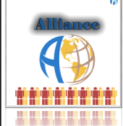

Review of Alliance
- Game ID
- bg211
- List Price
- $22.15
- Media
- Board Game
- Release Date
- September 14, 2017
- Age
- 12+
- Players
- 2 – 6
- Time
- 60 – 120 minutes
Decide the Fate of the World
The world is at war. Alliance challenges you and your opponents to decide the outcome. As one of the world powers battling for supremacy you must lead your country's military drive; but you can't do it alone. You have to form alliances and then betray your allies before they betray you!
Decide where to strike, when to strike, and the intensity of the strike. Will it be a bombing raid, an offshore missile barrage, or an invasion with land forces and tanks? Plan your attack, move into enemy territory with your forces and win the conflict.
The economic destiny of your nation is also at stake. Buy armaments and develop secret weapons from your country's economic funds and natural reserves, but be sure to save something for the future.
Harpe Gaming's Rating
- Entertainment (7/10)
- Strategy (10/10)
- Innovation (6/10)
- Art Work (5/10)
- Community Enjoyment (8/10)
- Ease of Set Up (7/10)
- Play Again (5/10)
- OVERALL (6.86/10)